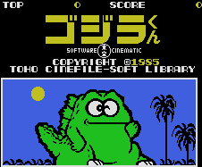
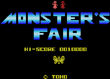

Gojira - MSX Games

This game is similar to the Gameboy version. Uses Godzilla and cartoon versions of Godzilla and other
monsters.

In this game, you play as the Mothra Larvae against Godzilla and cartoon versions of Godzilla and other monsters.
Anime Video Game Resource Center © 1998 by Luis A. Cruz